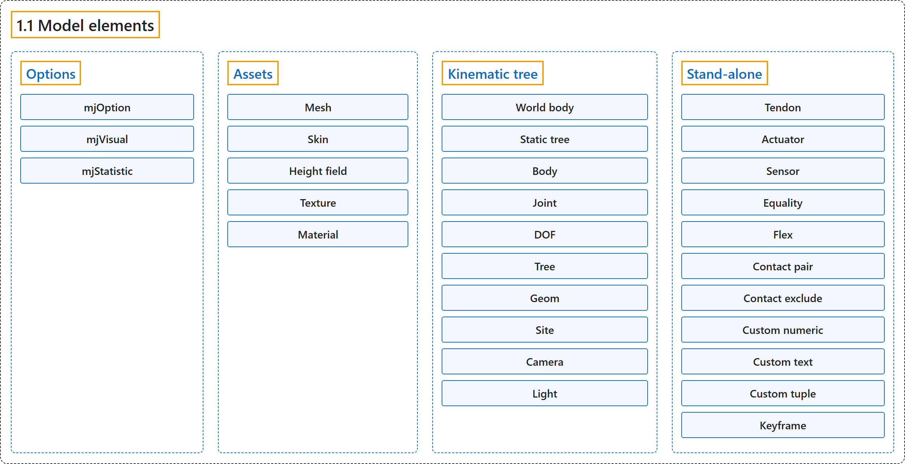

1.1 Model elements
Classification

Glossary
| Term | Definition | 中文翻译 | Source |
|---|---|---|---|
| 1.1 Model elements 模型元素 |
(No definition) | （无定义） | Google DeepMind, n.d., "Model elements" |
| Options 选项 |
"Each model has three sets of options listed below. They are always included." | 每个模型都有下面列出的三组选项。它们总是包含在模型中。 | Google DeepMind, n.d., "Options", para. 1 |
| mjOption mjOption |
"This structure contains all options that affect the physics simulation." | 这个结构体包含所有影响物理仿真的选项。 | Google DeepMind, n.d., "mjOption", para. 1 |
| mjVisual mjVisual |
"This structure contains all visualization options." | 这个结构体包含所有可视化选项。 | Google DeepMind, n.d., "mjVisual", para. 1 |
| mjStatistic mjStatistic |
"This structure contains statistics about the model which are computed by the compiler: average body mass, spatial extent of the model etc." | 这个结构体包含由编译器计算的模型统计量：平均刚体质量、模型的空间范围等。 | Google DeepMind, n.d., "mjStatistic", para. 1 |
| Assets 资源 |
"Assets are not in themselves model elements. Model elements can reference them, in which case the asset somehow changes the properties of the referencing element." | 资源本身不是模型元素。模型元素可以引用它们，此时资源会以某种方式改变引用它的元素的属性。 | Google DeepMind, n.d., "Assets", para. 1 |
| Mesh 网格 |
"MuJoCo can load triangulated meshes from OBJ files and binary STL." | MuJoCo 可以从 OBJ 文件和二进制 STL 加载三角网格。 | Google DeepMind, n.d., "Mesh", para. 1 |
| Skin 蒙皮 |
"Skinned meshes (or skins) are meshes whose shape can deform at runtime." | 蒙皮网格（或蒙皮）是形状可以在运行时变形的网格。 | Google DeepMind, n.d., "Skin", para. 1 |
| Height field 高度场 |
"A height field is a rectangular grid of elevation data." | 高度场是一个由高程数据组成的矩形网格。 | Google DeepMind, n.d., "Height field", para. 1 |
| Texture 纹理 |
(context) "Textures can be loaded from PNG or KTX files or synthesized by the compiler based on user-defined procedural parameters." | （语境）纹理可以从 PNG 或 KTX 文件加载，或由编译器根据用户定义的程序化参数合成。 | Google DeepMind, n.d., "Texture", para. 1 |
| Material 材质 |
"Materials are used to control the appearance of geoms, sites and tendons." | 材质用于控制 geom、site 和肌腱的外观。 | Google DeepMind, n.d., "Material", para. 1 |
| Kinematic tree 运动学树 |
"MuJoCo simulates the dynamics of a collection of rigid bodies whose motion is usually constrained. The system state is represented in joint coordinates and the bodies are explicitly organized into kinematic trees." | MuJoCo 仿真一组运动通常受约束的刚体的动力学。系统状态用关节坐标表示，刚体被显式地组织成运动学树。 | Google DeepMind, n.d., "Kinematic tree", para. 1 |
| World body 世界刚体 |
"The top-level “world” body always exists (with id 0) and is its own parent, thus body_parentid[0] == 0 and body_parentid[i] < i for all other i." | 顶层的“世界”刚体总是存在（id 为 0），并且是它自己的父刚体，因此 body_parentid[0] == 0，且对其他所有 i 有 body_parentid[i] < i。 | Google DeepMind, n.d., "Kinematic tree", para. 1 |
| Static tree 静态树 |
"Note that the world body and other static (joint-less) child bodies form a unique “static tree” with no associated degrees of freedom." | 注意，世界刚体和其他静态（无关节）子刚体构成一棵唯一的、没有关联自由度的“静态树”。 | Google DeepMind, n.d., "Kinematic tree", para. 1 |
| Body 刚体 |
"Bodies have mass and inertial properties but do not have any geometric properties." | 刚体有质量和惯性属性，但没有任何几何属性。 | Google DeepMind, n.d., "Body", para. 1 |
| Inertial frame 惯性坐标系 |
"Each body has two coordinate frames: the frame used to define it as well as to position other elements relative to it, and an inertial frame centered at the body’s center of mass and aligned with its principal axes of inertia." | 每个刚体有两个坐标系：一个用来定义它并相对于它定位其他元素，另一个是以刚体质心为中心、与其惯性主轴对齐的惯性坐标系。 | Google DeepMind, n.d., "Body", para. 1 |
| Joint 关节 |
"Joints are defined within bodies. They create motion degrees of freedom (DOFs) between the body and its parent." | 关节定义在刚体内部。它们在刚体与其父刚体之间创建运动自由度（DOF）。 | Google DeepMind, n.d., "Joint", para. 1 |
| Free joint 自由关节 |
"There are four types of joints: ball, slide, hinge, and a “free joint” which creates floating bodies." | 关节有四种类型：球关节、滑动关节、铰链关节，以及一种创建浮动刚体的“自由关节”。 | Google DeepMind, n.d., "Joint", para. 1 |
| Joint reference 关节参考 |
"The reference pose is a vector of joint positions stored in mjModel.qpos0." | 参考位姿是存放在 mjModel.qpos0 中的关节位置向量。 | Google DeepMind, n.d., "Joint reference", para. 1 |
| Spring reference 弹簧参考 |
"This is the pose in which all joint and tendon springs achieve their resting length." | 这是所有关节弹簧和肌腱弹簧都处于静止长度时的位姿。 | Google DeepMind, n.d., "Spring reference", para. 1 |
| DOF 自由度 |
"Degrees of freedom are closely related to joints, but are not in one-to-one correspondence because ball and free joints have multiple DOFs." | 自由度与关节密切相关，但并非一一对应，因为球关节和自由关节有多个自由度。 | Google DeepMind, n.d., "DOF", para. 1 |
| Tree 树 |
"A kinematic tree or “tree” is a movable body and all of its descendants." | 运动学树或“树”是一个可动刚体及其所有后代。 | Google DeepMind, n.d., "Tree", para. 1 |
| Subtree 子树 |
"Note that while trees are indeed subtrees of the global tree (whose root is the world), this should not be confused with the specific term subtree, which is reserved for per-body partial trees, thus mjModel.body_subtreemass gives the total mass of the partial tree under each body, for all bodies." | 注意，虽然树确实是全局树（其根是世界）的子树，但这不应与专门术语 subtree 混淆，它专指以每个刚体为根的部分树，因此 mjModel.body_subtreemass 给出所有刚体各自下方部分树的总质量。 | Google DeepMind, n.d., "Tree", para. 2 |
| Geom 几何体 |
"Geoms are 3D shapes rigidly attached to the bodies." | geom 是刚性附着在刚体上的三维形状。 | Google DeepMind, n.d., "Geom", para. 1 |
| Site 站点 |
"Sites are essentially light geoms. They represent locations of interest within the body frame." | site 本质上是轻量的 geom。它们表示刚体坐标系内值得关注的位置。 | Google DeepMind, n.d., "Site", para. 1 |
| Camera 相机 |
(context) "However it is often convenient to define additional cameras that are either fixed to the world, or are attached to one of the bodies and move with it." | （语境）不过，定义另外的相机往往很方便：它们要么固定在世界中，要么附着在某个刚体上并随它移动。 | Google DeepMind, n.d., "Camera", para. 1 |
| Light 光源 |
(context) "Lights can be fixed to the world body or attached to moving bodies." | （语境）光源可以固定在世界刚体上，或附着在运动的刚体上。 | Google DeepMind, n.d., "Light", para. 1 |
| Stand-alone 独立元素 |
"Here we describe the model elements which do not belong to an individual body, and therefore are described outside the kinematic tree." | 这里介绍不属于单个刚体的模型元素，因此它们在运动学树之外描述。 | Google DeepMind, n.d., "Stand-alone", para. 1 |
| Tendon 肌腱 |
"Tendons are scalar length elements that can be used for actuation, imposing limits and equality constraints, or creating spring-dampers and friction loss." | 肌腱是标量长度元素，可用于驱动、施加限位和等式约束，或构造弹簧阻尼器和摩擦损失。 | Google DeepMind, n.d., "Tendon", para. 1 |
| Fixed tendons 固定肌腱 |
"Fixed tendons are linear combinations of (scalar) joint positions." | 固定肌腱是（标量）关节位置的线性组合。 | Google DeepMind, n.d., "Tendon", para. 1 |
| Spatial tendons 空间肌腱 |
"Spatial tendons are defined as the shortest path that passes through a sequence of specified sites (or via-points) or wraps around specified geoms." | 空间肌腱定义为穿过一系列指定 site（即途经点）或缠绕指定 geom 的最短路径。 | Google DeepMind, n.d., "Tendon", para. 1 |
| Actuator 驱动器 |
"MuJoCo provides a flexible actuator model, with three components that can be specified independently." | MuJoCo 提供一个灵活的驱动器模型，它有三个可以独立指定的组成部分。 | Google DeepMind, n.d., "Actuator", para. 1 |
| Transmission 传动 |
"The transmission specifies how the actuator is attached to the rest of the system; available types are joint, tendon, slider-crank, site and body." | 传动指定驱动器如何连接到系统的其余部分；可用类型有 joint、tendon、slider-crank、site 和 body。 | Google DeepMind, n.d., "Actuator", para. 1 |
| Activation dynamics 激活动力学 |
"The activation dynamics can be used to model internal activation states of pneumatic or hydraulic cylinders as well as biological muscles; using such actuators makes the overall system dynamics 3rd-order." | 激活动力学可用于建模气缸、液压缸以及生物肌肉的内部激活状态；使用这类驱动器会使整个系统动力学成为三阶的。 | Google DeepMind, n.d., "Actuator", para. 1 |
| Force generation 力生成 |
"The force generation mechanism determines how the scalar control signal provided as input to the actuator is mapped into a scalar force, which is in turn mapped into a generalized force by the moment arms inferred from the transmission." | 力生成机制决定作为驱动器输入的标量控制信号如何映射为标量力，该力再由从传动推出的力臂映射为广义力。 | Google DeepMind, n.d., "Actuator", para. 1 |
| Sensor 传感器 |
"MuJoCo can generate simulated sensor data which is saved in the global array mjData.sensordata." | MuJoCo 可以生成仿真的传感器数据，保存在全局数组 mjData.sensordata 中。 | Google DeepMind, n.d., "Sensor", para. 1 |
| User sensor type 用户传感器类型 |
"There is also a user sensor type, allowing user code to insert any other quantity of interest in the sensor data array." | 还有一种用户传感器类型，允许用户代码把任何其他感兴趣的量插入传感器数据数组。 | Google DeepMind, n.d., "Sensor", para. 1 |
| Equality 等式约束 |
"Equality constraints can impose additional constraints beyond those already imposed by the kinematic tree structure and the joints/DOFs defined in it." | 等式约束可以在运动学树结构及其中定义的关节/自由度已施加的约束之外，再施加额外的约束。 | Google DeepMind, n.d., "Equality", para. 1 |
| Flex 柔性体 |
"Flexes represent deformable meshes that can be 1, 2 or 3 dimensional (thus their elements are capsules, triangles or tetrahedra)." | flex 表示可以是一维、二维或三维的可变形网格（因此其单元是胶囊体、三角形或四面体）。 | Google DeepMind, n.d., "Flex", para. 1 |
| Contact pair 接触对 |
"Geom pairs that are checked for contact can come from two sources: automated proximity tests and other filters collectively called “dynamic”, as well as an explicit list of geom pairs provided in the model. The latter is a separate type of model element." | 要做接触检查的 geom 对有两个来源：自动邻近测试和其他过滤器（统称为“dynamic”），以及模型中提供的显式 geom 对列表。后者是一种单独的模型元素类型。 | Google DeepMind, n.d., "Contact pair", para. 1 |
| dynamic 动态机制 |
"Geom pairs that are checked for contact can come from two sources: automated proximity tests and other filters collectively called “dynamic”, as well as an explicit list of geom pairs provided in the model." | 要做接触检查的 geom 对有两个来源：自动邻近测试和其他过滤器（统称为“dynamic”），以及模型中提供的显式 geom 对列表。 | Google DeepMind, n.d., "Contact pair", para. 1 |
| Contact exclude 接触排除 |
"This is the opposite of contact pairs: it specifies pairs of bodies (rather than geoms) which should be excluded from the generation of candidate contact pairs." | 它与接触对相反：它指定应从候选接触对的生成中排除的刚体对（而不是 geom 对）。 | Google DeepMind, n.d., "Contact exclude", para. 1 |
| Custom numeric 自定义数值 |
"There are three ways to enter custom numbers in a MuJoCo simulation." | 有三种方式可以在 MuJoCo 仿真中输入自定义数值。 | Google DeepMind, n.d., "Custom numeric", para. 1 |
| Custom text 自定义文本 |
"Custom text fields can be saved in the model. They can be used in custom computations – either to specify keyword commands, or to provide some other textual information." | 自定义文本字段可以保存在模型中。它们可用于自定义计算：指定关键字命令，或提供其他文本信息。 | Google DeepMind, n.d., "Custom text", para. 1 |
| Custom tuple 自定义元组 |
"Custom tuples are lists of MuJoCo model elements, possibly including other tuples." | 自定义元组是MuJoCo 模型元素的列表，其中可能包含其他元组。 | Google DeepMind, n.d., "Custom tuple", para. 1 |
| Keyframe 关键帧 |
"A keyframe is a snapshot of the simulation state variables." | 关键帧是仿真状态变量的一个快照。 | Google DeepMind, n.d., "Keyframe", para. 1 |
References
Google DeepMind. (n.d.). Overview. MuJoCo Documentation (Version 3.17.0). Retrieved October 31, 2026, from https://mujoco.readthedocs.io/en/stable/overview.html